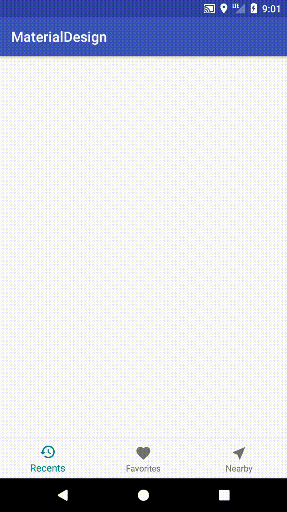

Introduction
Bottom Navigation在Material Design中算是相當重要的一個組件，通常會用在主頁底部的部分，在使用Bottom Design作為App設計上，有點要注意：
1.Bottom Navigation可以使用文字搭配圖示
2.通常放置3個item，最多不超過5個，如果少於2個item，請使用Tabs，超過5個，可以使用Navigation drawers
3.選中狀態下的顏色，建議使用App’s primary color或是同Toolbar的顏色，
4.如果Bottom Navigation已經有背景顏色，那選中狀態的文字與圖示應使用白色或是黑色
5.Bottom Navigation上的文字，盡量簡短明暸，以免發生文字斷行、縮小、未顯示的情形
接下來我們就來實作Bottom Navigation
Create a Bottom Navigation
在Android Studio中，也提中快速創建Bottom Navigation的模板，不過我們本篇會選用Empty Activity
1.要使用BottomNavigationView，首先需要把support:design library添加進我們的Project中，在 File -> Project Structure -> Dependencles 下新增。
2.接下來在layout裡，創建一個BottomNavigationView，背景顏色使用跟窗口背景顏色一樣
layout:
1 | <android.support.design.widget.BottomNavigationView |
3.緊接著我們要創建BottomNavigationView 的 menu，在res -> menu目錄下創建
menu:
1 | <?xml version="1.0" encoding="utf-8"?> |
4.回到layout在BottomNavigationView的屬性中添加menu
layout:
1 | <android.support.design.widget.BottomNavigationView |
運行效果如下：
Customize the Bottom Navigation
接下來我們要改變BottomNavigationView被選中文字/圖示顏色，包含BottomNavigationView的背景。
BottomNavigationView預設選中的顏色是當前Theme中的color primary，也就是跟Toolbar顏色一至
1.首先建立一個新style，並自定義color primary的顏色
style:
1 | <style name="BottomNavigationTheme" parent="Widget.Design.BottomNavigationView"> |
2.回到layout在BottomNavigationView的屬性中添加上剛剛創建的style
layout:
1 | <android.support.design.widget.BottomNavigationView |
運行效果如下：

變更BottomNavigationView的背景圖案可以加入屬性：
1 | app:itemBackground="@color/colorCustomize" |
變更BottomNavigationView的圖示顏色可以加入屬性：
1 | app:itemIconTint="@color/colorCustomize" |
變更BottomNavigationView的文字顏色可以加入屬性：
1 | app:itemTextColor="@color/colorCustomize" |
Add an On-click Listener to the Bottom Navigation
監聽BottomNavigationView的點擊事件，在代碼中呼叫**setOnNavigationItemSelectedListener()**方法
java:
1 | bottomNavigationView.setOnNavigationItemSelectedListener(new BottomNavigationView.OnNavigationItemSelectedListener() { |
運行效果如下：
參考資料：
Android BottomNavigationView
Material Design Bottom navigation